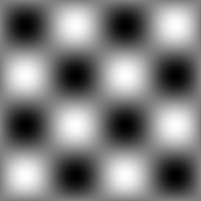
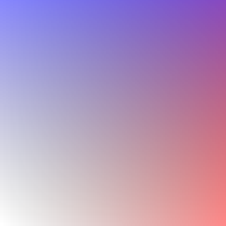
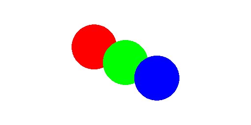

Image¶
This module wraps various parts of the Pillow image library to better
integrate it with other components of arlunio in order to help produce and
manipulate images that can be saved eventually to disk.
Creating Images¶
-
arlunio.image.new(size, *args, mode='RGBA', **kwargs) → arlunio.image.Image[source]¶ Creates a new image with the given size.
This function by default will return a new
RGBAimage with the given dimensions. Dimensions can be specified either using a tuple(width, height)or by passing inwidthandheightindividually as positional parameters.This makes use of pillow’s
PIL.Image.new()function, additional keyword arguments passed to this function will be passed onto it.- Parameters
size – The dimensions of the image,
(width, height)mode – The type of image to create, default
RGBA. See Modes for more details.
Image I/O¶
-
arlunio.image.encode(image: arlunio.image.Image) → bytes[source]¶ Return the image encoded as a base64 string.
- Parameters
image – The image to encode.
Example
>>> import arlunio.image as image >>> img = image.new((8, 8), color='red') >>> image.encode(img) b'iVBORw0KGgoAAAANSUhEUgAAAAgAAAAICAYAAADED76LAAAAFklEQVR4nGP8z8DwnwEPYMInOXwUAAASWwIOH0pJXQAAAABJRU5ErkJggg=='
-
arlunio.image.decode(bytestring: bytes) → arlunio.image.Image[source]¶ Decode the image represented by the given bytestring into an image object.
- Parameters
bytestring – The bytestring to decode.
Example
import arlunio.image as image bytestring = b'iVBORw0KGgoAAAANSUhEUgAAAAgAAAAICAYAAADED76LAAAAFklEQVR4nGP8z8DwnwEPYMInOXwUAAASWwIOH0pJXQAAAABJRU5ErkJggg==' # noqa: E501 img = image.decode(bytestring)
-
arlunio.image.load(*args, **kwargs) → arlunio.image.Image[source]¶ Load an image from the given file.
See
PIL.Image.open()
Manipulating Images¶
-
arlunio.image.colorramp(values, start: Optional[str] = None, stop: Optional[str] = None) → arlunio.image.Image[source]¶ Given a 2d array of values, produce an image gradient based on them.
First this function will scale the input array so that all values fall in the range \([0, 1]\). It will then produce an image with the same dimensions as the original array. The color of each pixel will be chosen based on the corresponding value of the scaled array.
If the value is \(0\) the color will be given by the
startparameterIf the value is \(1\) the color will be given by the
stopparameterOtherwise the color will be some mix between the two.
- Parameters
values – The array of values used to decide on the color.
start – The color to use for values near \(0\) (default,
black)stop – The color to use for values near \(1\) (default,
white)
Examples
import arlunio.image as image import arlunio.math as math import numpy as np cartesian = math.Cartesian() p = cartesian(width=256, height=256) x = image.colorramp(p[:, :, 0], start="#0000", stop="#f007") y = image.colorramp(p[:, :, 1], start="#0000", stop="#00f7") img = x + y
-
arlunio.image.fill(mask: arlunio.mask.Mask, foreground: Optional[str] = None, background: Optional[str] = None, image: Optional[arlunio.image.Image] = None) → arlunio.image.Image[source]¶ Apply color to an image, as specified by a mask.
- Parameters
mask – The mask that selects the region to be coloured
foreground – A string representation of the color to use, this can be in any format that is supported by the
PIL.ImageColormodule. If omitted this will default to black.background – In the case where an existing image is not provided this parameter can be used to set the background color of the generated image. This can be any string that is accepted by the
PIL.ImageColormodule. If omitted this will default to transparentimage – The image to color in, if omitted a blank image will be used.
Example
import arlunio.image as image import arlunio.shape as shape circle = shape.Circle(x0=-0.5, y0=0.25, r=0.6) img = image.fill(circle(width=512, height=256), foreground='red') circle.x0, circle.y0 = 0, 0 img = image.fill(circle(width=512, height=256), foreground='#0f0', image=img) circle.x0, circle.y0 = 0.5, -0.25 img = image.fill(circle(width=512, height=256), foreground='blue', image=img)
-
class
arlunio.image.Image(img: PIL.Image.Image)[source]¶ Our representation of an image, implemented as a wrapper around a standard Pillow image.
-
copy()[source]¶ Return a copy of the image. See
PIL.Image.Image.copy()
-
img¶ The wrapped pillow image object.
-